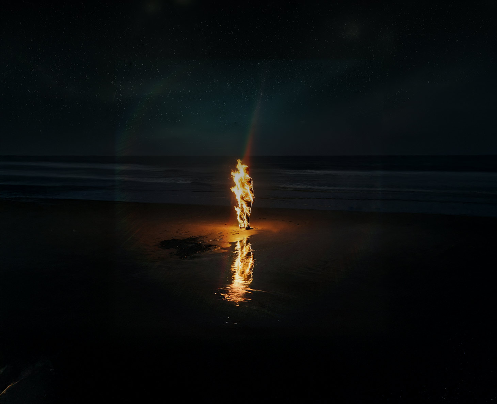

Derrière le soleil
présente
This was us
Et puis bah là c'est une recette ou une liste de course au choix, en tout cas je me souviens de sauce tomate et peut être de bolognese
scroll
Chapitre 1

Comment se dire adieu
Chapitre 1
Comment se dire adieux
La pelle n'était pas là où elle pensé l'avoir laissée. Louise fouillait le hangar depuis une dizaine de minutes maintenant, les mains dans la poussière, les toiles d'araignée s’accrochant a ses cheveux et son visage transpirant. Dix minutes à déplacer des pots de fleurs vides, un tuyau d'arrosage crevé, des outils dont elle avait oublié le nom et l'usage. Le hangar sentait la terre sèche, la rouille et le temps passé. Au-dessus d'elle, la tôle du toit claquait mollement dans un courant d'air, comme une respiration que personne n'avait demandée.
Elle la trouva derrière un sac de terreau éventré. Le bout de la lame était orange de rouille, mais le manche semblait encore solide. Elle la tira vers elle et sortit dans la lumière.
Devant le hangar, le jardin. Ou du moins ce qui avait été un jardin. Les ronces avaient mangé les plates-bandes, le lierre grimpait le long des murs de pierre jusqu'au toit, lent et patient comme la nature à toujours su le faire. Les arbres, q uant à eux, s'en foutaient complètement — ils avaient poussé dans tous les sens, leurs branches basses touchant presque le sol, ce dernier n’ayant pas son mot à dire. Et pourtant il y avait un temps où s’occuper de son jardin était probablement l’une de ses activités préférées – être en contact avec la terre lui rappelé le réel le concret, pas celui noyé dans les écrans et algorithme. Pourtant un matin, elle s'était levée et elle n'avait plus eu envie. Pas uniquement de ne plus jardiner ; elle n’avait envie de plus rien. Si dans un premier temps elle avait trouvé ça triste, elle s’est vite rendû compte qu’il pouvait y avoir pire, lorsque les pensées sombre sont arrivées accompagné d’un désir assez profond de se faire sauter la cafetière. Dans un premier temps elle avait essayé de se forcer et de s'y r emettre, mais le geste ne venait plus, elle était vide toute tout ce qui avant lui importée. Alors elle avait laissé faire. Certains jours e le trouvait qu’il y avait quelque chose de magnifique à laisser la nature reprendre ses droits.
Elle traversa l'allée qui conduisait au portail en bois à la peinture écaillé. Elle le poussa. Il grinça brisant le silence de la rue vide. Pas de voiture. Pas de voix. Pas de chien. Pas d'oiseau. Rien. Le monde avait oublié son language. Le lieu-dit comptait une poignée de maisons et la plupart semblaient inhabitées, ou habitées par des fantômes trop discrets pour qu'on les remarque. En face, celle d'Ernest. Le vieux était là bien avant qu'elle et Ambroise ne s'installent ici. Il les avait acceptés tout de suite, comme on accepte l’automne — sans enthousiasme mais sans hostilité. Ses volets étaient fermés. Louise réalisa qu'elle ne l'avait pas vu depuis plusieurs jours. Peut-être plus. Le temps avait cette texture-là, désormais. Les jours coulaient les uns dans les autres et elle ne savait plus très bien les compter. Le Kangoo était garé un peu plus loin, gris, couvert d'une fine couche de poussière comme tout ce qu'on oublie quelque part dans un coin reclus d’une pièce laissé à l’abandon. En s'approchant elle vit que la portière passager était ouverte - pas entièrement juste entrebâillé. Elle regarda la rue dans les deux sens. Personne. Elle posa la pelle contre la carrosserie.
Le Kangoo était garé un peu plus loin, gris, couvert d'une fine couche de poussière comme tout ce qu'on oublie quelque part dans un coin reclus d’une pièce laissé à l’abandon. En s'approchant elle vit que la portière passager était ouverte - pas entièrement juste entrebâillé. Elle regarda la rue dans les deux sens. Personne. Elle posa la pelle contre la carrosserie. En se penchant dans l'habitacle elle ne put qu’être pris à la gorge pas cette odeur rance, épaisse et écœurante qui après avoir rempli sa maison, ses vêtements, ses draps, ses cheveux au fur et à mesure des semaines, s’en prenait maintenant à sa voiture. Mais elle ne grimaça pas elle était habituée à présent.
De plus elle savait que bientôt tout ça serait fini et que d’ici quelques heures elle serait face à la mer et que l'odeur s'en irait dans le vent, que le poids qu’elle portait sur sa poitrine s'en irait avec elle, et qu'il ne resterait plus que les embruns, le sel et l'horizon. Deux mouches tournaient au-dessus de la banquette arrière, lentes et obstinées, leur bourdonnement résonné tristement dans le vide auditif de ce monde. Sur le siège passager — la place du mort — une cassette audio et en dessous une feuille pliée en quatre. Louise, inquiète passa au-dessus du volant et prit les deux. La cassette était banale, noire, sans étiquette. La feuille était légère entre ses doigts sur l’une des faces était écrit « This was us » , mais un mauvais présentiment commencé à prendre place dans sa cage thoracique. Elle la déplia. Des mots écrit en manuscrit. Elle lut les premières lignes. Ses yeux s'arrêtèrent. Quelque chose se serra dans sa poitrine, pas un battement, plutôt le souvenir d'un battement, d’un muscle qui se contracte autour de quelque chose qui n'est plus là. Elle regarda autour d'elle. Le vide de la rue, les volets fermés d'Ernest, les arbres immobiles comme des témoins muets. Elle replia la feuille, la glissa dans la poche arrière de son jean.
La cassette dans sa main. Elle la retourna. Noire des deux côtés. Elle se souvint d'un coup — pas de cette cassette-là, mais de toutes les autres. Celles de son enfance. Le lecteur de sa mère dans la cuisine, un truc en plastique beige avec les touches qui s'enfonçaient mal. Les CD existaient déjà mais ils coûtaient trop cher pour les prolos qu'ils étaient, alors chez eux c'était les cassettes, les compilations enregistrées depuis la radio avec la voix du présentateur qui débordait sur les premières secondes. Elle avait sept ans, peut-être huit. Le soleil tapait dans la cuisine et découpait des rectangles de lumière sur le carrelage. Sa mère chantait faux. Elle chantait toujours faux. C'était bien. C'était le genre de bonheur qui ne sait pas encore qu'il en est un, le genre qu'on ne reconnaît que vingt ans plus tard quand il n'y a plus personne pour chanter faux dans la cuisine.
C'était il y a longtemps
Louise regarda la pelle posée contre le Berlingo. Elle regarda la cassette. La mer pouvait attendre. La mer attend toujours. Elle jeta la pelle à l'arrière du véhicule, claqua la portière. Le bruit résonna dans la rue vide et personne ne l'entendit.
Elle rentra. La maison était sombre, les rideaux tirés comme si elle ne voulait pas que la nature extérieure puisse être spectatrice de ce qui se passait à l'intérieur. Elle fouilla un placard du salon et en sortit un vieux lecteur cassette, un truc rectangulaire et poussiéreux qu'elle posa sur la table basse. Elle alla à la cuisine, prit la bouteille de rouge entamée sur le plan de travail — il en restait un tiers, peut-être moins — et se servit un verre. Pas le premier de la journée. Probablement pas le dernier non plus.
Elle s'assit dans le fauteuil. Alluma une cigarette. Inséra la cassette dans le lecteur. Le mécanisme fit un bruit sec, un clac sourd et familier, le son d'une porte qui s'ouvre vers un autre univers. Elle posa le doigt sur la touche play. Dehors, toujours le silence. Dedans, la fumée montait vers le plafond en volutes lentes, se tordait dans le peu de lumière qui filtrait entre les rideaux, et se dissolvait doucement, comme tout ce qui n'a nulle part où aller.
Elle appuya.